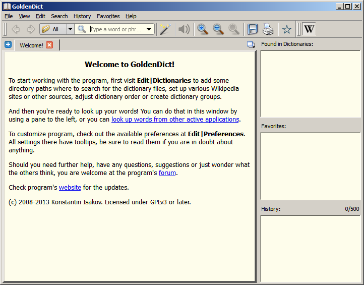

\indexpage_Reference GoldenDict is cross-platform multi-format Qt-based dictionary lookup program. Now GoldenDict works under Linux/X11, Windows (Windows XP and later) and MacOS X. GoldenDict supports local dictionaries, network resources and some other resources.